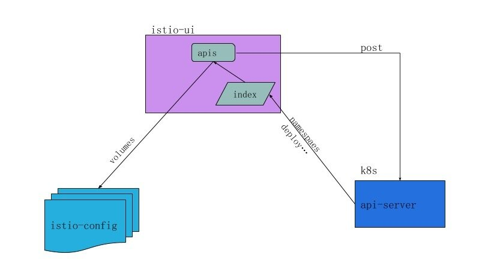
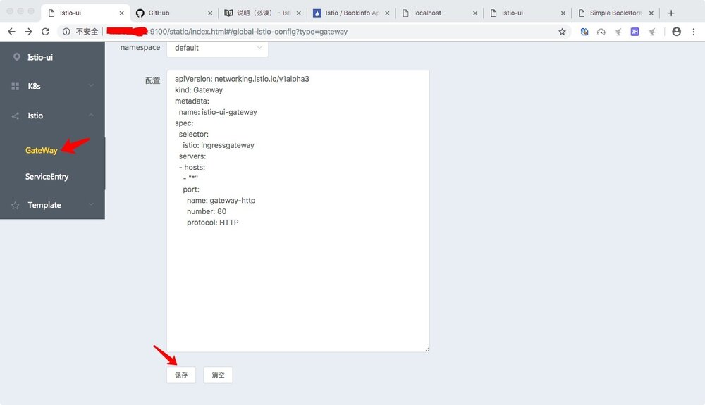
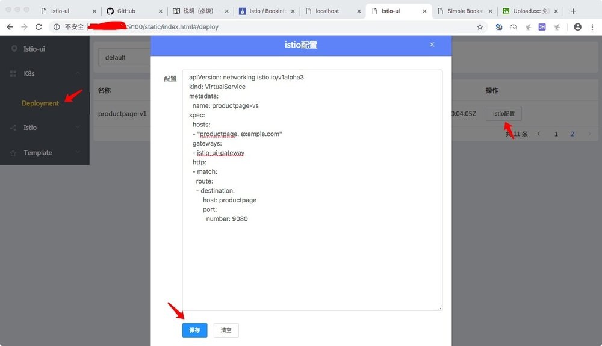
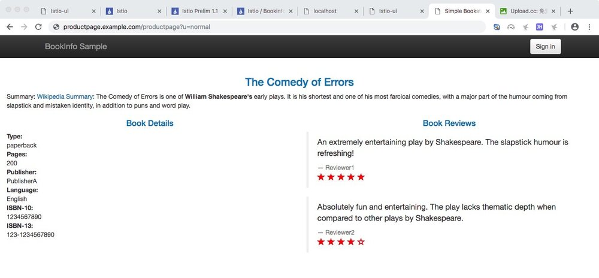

由来
开发istio-ui是由于运维：
到时候线上几百个istio配置文件管理会很麻烦。其实在开始接触istio的时候，我们其他同学就有这样的想法，当时大家都认为不久官方或社区就会有相应的产品出来。但等了几个月还是没音讯，所以我们就按照我们自己的需求开发了istio-ui，并且开源。当然现在还是一块滑板。离奔驰还需要慢慢雕琢。 在这个基础上，结合我们当前服务环境，增加了：校验，注入，模板等功能。
校验
校验是必须的，没人能保证自己不犯错，即使是
Ctrl+C，Ctrl+V
注入
有三种方式
-
一键注入
基于运行中的服务
Deployment:apps/v1进行注入，使用这种方式服务会被重新部署 -
文件上传注入
将需要注入的文件发送到远程api接口
kubectl apply -f <(curl -F "config=@samples/bookinfo/platform/kube/bookinfo.yaml" http://localhost:9100/inject/file)
-
内容注入
将需要注入的内容发送到远程api接口
kubectl apply -f <(curl -X POST --data-binary @samples/bookinfo/platform/kube/bookinfo.yaml -H "Content-type: text/yaml" http://localhost:9100/inject/context)
一键注入主要用于测试和学习，因为他需要二次部署，不适用于生产。而api接口注入是为了和持续集成部署结合起来。
模板
模板这个功能我们还在思考中，在使用istio过程中发现，不同服务的服务治理配置很多是一样的，不会出现
千人千面的情况，所以打算实现通过模板形式管理配置。
k8s编排管理
这是我们运维的想法，把k8s的编排也放在istio-ui管理，为了方便持续集成部署。但这个功能还没确定是否在istio-ui上开发，因为istio-ui的职责设定是管理istio的配置，如果把k8s的编排也放过来，那时候应该不叫istio-ui了。
安装
安装前先确认已安装k8s
- docker
需要先设置 KUBECONFIG，这是授权istio-ui访问k8s的api-server接口
docker run -itd -v $KUBECONFIG:$HOME/.kube/config -p9100:9100
--name istio-ui --env KUBECONFIG=$HOME/.kube/config registry.cn-shenzhen.aliyuncs.com/jukylin/istio-ui:v0.1
- k8s
kubectl apply -f https://raw.githubusercontent.com/jukylin/istio-ui/master/istio-ui.yaml
新手任务
在任务开始前先确认已安装k8s，istio和istio-ui，在这个任务中我们使用k8s安装istio-ui，用官网的Bookinfo作为例子。
获取Istio-ui的IP
istio-ui.yaml默认使用
LoadBalancer部署
export ISTIOUI_IP=kubectl get service istio-ui -o jsonpath='{.status.loadBalancer.ingress[0].ip}'
使用api接口注入部署Bookinfo
kubectl apply -f <(curl -F "config=@samples/bookinfo/platform/kube/bookinfo.yaml" http://ISTIOUI_IP:9100/inject/file)
配置Gateway
- 访问gateway配置页
http://ISTIOUI_IP:9100/static/index.html#/global-istio-config?type=gateway
- 添加下面配置
apiVersion: networking.istio.io/v1alpha3
kind: Gateway
metadata:
name: istio-ui-gateway
spec:
selector:
istio: ingressgateway
servers:
- hosts:
- "*"
port:
name: gateway-http
number: 80
protocol: HTTP

配置VirtualService
- 访问Deployment配置页
http://ISTIOUI_IP:9100/static/index.html#/deploy
- 点击productpage-v1的
istio配置，添加下面配置
apiVersion: networking.istio.io/v1alpha3
kind: VirtualService
metadata:
name: productpage-vs
spec:
hosts:
- "productpage.example.com"
gateways:
- istio-ui-gateway
http:
- match:
route:
- destination:
host: productpage
port:
number: 9080

绑定host
- 获取 INGRESS_IP
export INGRESS_IP=$(kubectl -n istio-system get service istio-ingressgateway -o jsonpath='{.status.loadBalancer.ingress[0].ip}')
- 将productpage.example.com 和 INGRESS_IP进行绑定
浏览器预览结果
http://productpage.example.com/productpage?u=normal

至此新手任务已经完成，istio-ui和官方提供的配置方式区别只是在于线上和线下配置，直接用来做官方的新手任务是一样的效果，而且为了保证原生性，我们并没有对配置进行1byte的修改。
结语
istio-ui的功能还不算完善，希望有兴趣的同学，可以贡献想法或代码，一起打造一个易用的istio-ui配置管理后台。前段时间听说sofa-mesh也在做对应的istio-ui后台，期待能早点推向社区，让我们参考学习。